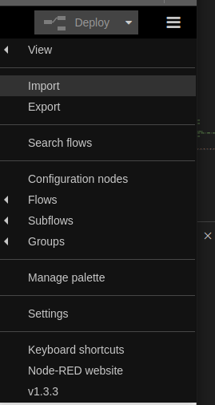

System Setup¶
Edge Computer Setup¶
Note: Running the ./install.sh script helps you install all prerquisites and set up the Edge Computer
Mandatory Prerequisites¶
python3¶
Python is an interpreted programming language. It can be installed like this
sudo apt install python3
Python packages¶
Python needs a few packages that are used by the tools provided. These can be installed like this
pip3 install --user pycryptodomex pyserial
node-red¶
Node Red is a programming tool for connecting hardware, services and APIs. It can either be installed using the package manager like this (Not recommended, but easier):
sudo apt install Node-RED
Or it can be installed using the install script on the official page https://nodered.org/docs/getting-started/raspberrypi (Recommended, but a little harder)
Optional Prerequisites¶
wireshark¶
Wireshark is a tool for anayzing network traffic. It is useful for analyzing and debugging problems related to network traffic. It it can be installed like this
sudo apt install wireshark
microcom¶
Microcom is a simple terminal program that can be used for interfacing UART based serial interfaces. It can be installed like this
sudo apt install microcom
Network Setup¶
In general network setup on this level can be complicated. Radiocrafts provide a setup script that sets up all the essentials for the example to work, and leaves out the unneccesary bits. In combination with the Node Red server, this should be sufficient for your application to connect to whatever online server you are using.
The script uses a precompiled SLIP/TUN driver. This driver is responsible for connecting to the UART and map it to a virtual network device (TUN). This TUN device can in turn be used like most other network devices.
Node RED Setup¶
After all other setup is done, it is time to setup Node RED. To access Node RED, it must have been started. That can be achieved by executing ./start.sh which will start it automatically.
After startup, Node RED will be accesible through a browser. If you are running the browser locally (on the edge computer), the address will be http://localhost:1880/ . If accessing from the outside, change localhost with the IP address of the edge computer. If unsure how to get it, see the troubleshooting section.
We need to install a CoAP extension to Node RED and import our flow. Start by clicking the menu in the top right corner and select Manage palette . Click the Install tab and type “coap” in the search bar. Select to install node-red-contrib-coap. Node RED is now set up with support for CoAP.
{kind=link}
{kind=link}
Now we need our flow. Open the menu again and select Import. Import the file located in ./NodeRed/RIIM_SLIP_Example_NodeRed.json.
{kind=link}

All is now set up. To start the Node RED server, click the big red Deploy button in the top right corner.